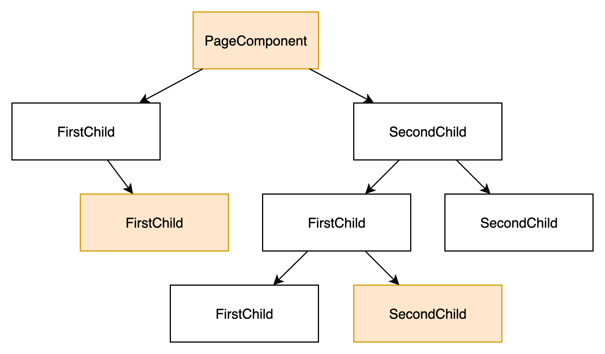

Datenmanagement im Frontend
export class ShowDataComponent {
@Input()
someData: SomeData;
@Output()
output: EventEmitter = new EventEmitter<Output>();
}
Datenmanagement im Frontend
<app-show-data
[someData]="{ ... }"
(output)="callOnOutput($event)">
</app-show-data>
Tiefe Component Hierarchien
- Daten werden durch Components "hindurchgereicht"
- Boilerplate Code

Beispiel Component Hierarchy
Think Big
Was wenn das Frontend noch größer ist ...
und überall die Daten erneut aus dem Backend gefetched werden?
Verteilter Daten
- Verteilte Daten
- Verteilter State
- State: Zustand der Anwendung
- Daten vom Backend, Zustand der UI, etc.
- unübersichtlich bei großen Anwendungen
- fehlerhafter State muss erst entdeckt werden